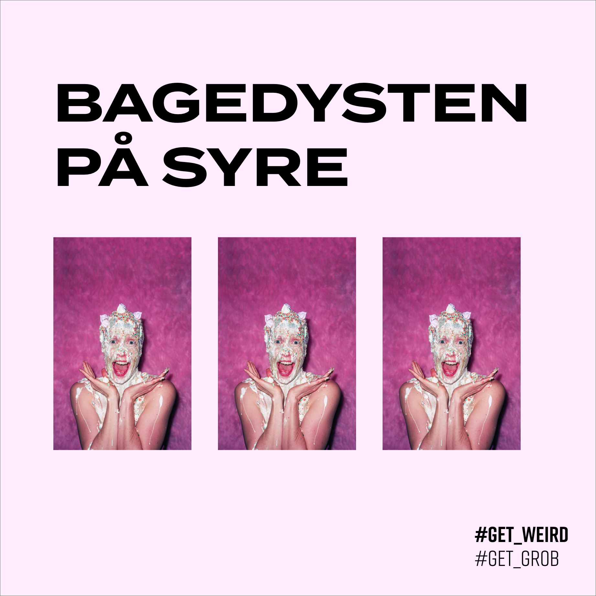
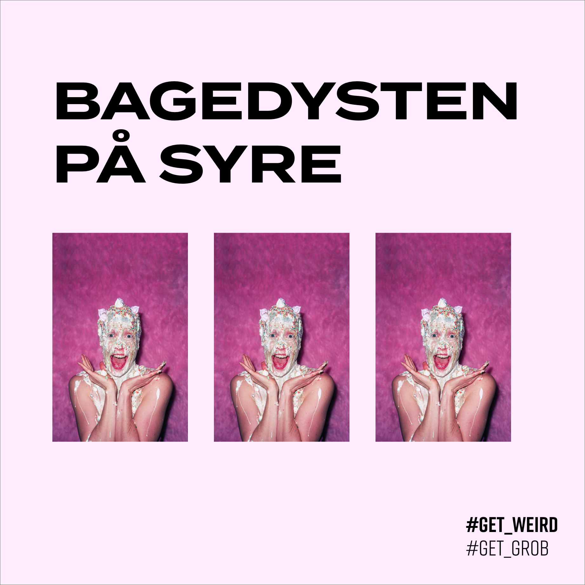

ÅRSKORT ABONNOMENT
Med et årskort på abonnoment har du fri adgang til Grob i et år, til
den lette månedlige sum af 30-50kr! Oven i hatten får du en masse
vilde rabatter. Dette indebærer 30% på alt i baren og på din
ledsagers billet, samt 20% på Grob’s øvrige arrangementer. Derudover
har du muligheden at låne dit årskort ud i til en ven 24 timer, via
vores Grob-app*! I denne periode kan du ikke selv benytte det, men
det behøver du ikke, for du har jo allerede set nyeste forestiling!
*Læs mere om Grob-app’en længere nede

#GETWEIRD ER DEN FØRSTE AF MANGE BUDSKABER, FRA #GETGROB!
Vi vil hylde og skabe opmærksomhed på mangfoldigheden! Vi vil åbne samtaler op. Vi skal skabe fokus på uforklarelige. Verden må gerne vendes på hovedet, så vi kan se den i nyt perspektiv. Vi vil gerne teater-forgængere for en god tone og for de dybe samtaler. Vær med til at sprede det gode budskabet med #GetGrob, #Getweird og alle de andre #Get's!
PLAKATER
Det er muligt at købe Grob med hjem! Vi har nemlig en masse
plakater fra vores nuværende og tidligere forestillinger. Nyligst
på stammen er vores plakater fra kampagnen GET GROB, der lever og
ånder på bedstevis lige nu.
Hvad venter du på? Klik nedenfor og shop løs!
SWAP-TIL-EN-BROKE-VEN-APPEN
Hvis du er en young-adult på SU, eller bare lever det dyre
Københavnerliv, så er vores nye løsning lige noget for dig!
Grob-app’en er landet!
Det er dit kig ind GROB og alt hvad
det indebærer. Her kan du holde årskort digitalt og låne det ud i 24
timer til din ven! Hvis i begge downloader app’en, kan du swiper en
til 1 valgt forestilling.
App’en vil også notificere dig
om evt overskydende billetter, der sælges billigere. Det er muligt at
holde øje med GROBs kommende arrangementer og kampagner på app’en!
Download Grob-app’en nu, og køb dit årskort på del!


Grob's Instagram er spækket med budskaber, der relaterer sig til alt
hvad vi rummer. Tøv ikke med at blive en del af Grobs hverdag på
Instagram!
 
